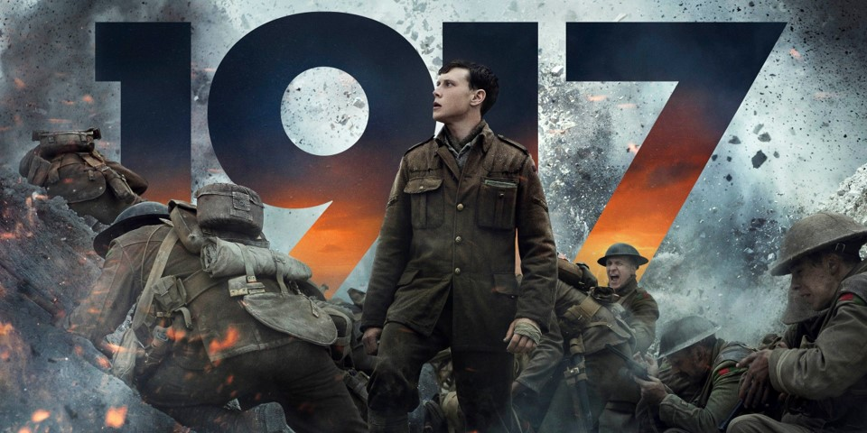

This is my super-duper, awesome, amazing page I made completely from scratch!
These are my top three favorite movies of all time, and reasons why I love them so much:
The Lord of the Rings: The Two Towers
I would put all three of the Lord of the Rings movies up here, but I wanted more variety. This is my favorite of the trilogy.
This movie is the epitome of what action-adventure movies should be. Amazing story-telling and equally great action.
Some of the greatest movie characters of all time are in this trilogy, and in this movie, all of their scenes are equally exciting.
This movie also has my favorite movie soundtrack of all time. Props to Howard Shore.
Ratatouille
This is my favorite animated movie of all time.
This is the Pixar movie that is based in reality the most (apart from a rat controlling a guy by pulling his hair), and I love it. It makes the movie feel even more immersive because of it.
I am biased towards this movie because it is about art and creating new things. I am passionate about music, and the passionate portrayal of creating is so good and so personal to me.
This is also one of my favorite movie soundtracks. Michael Giacchino is one of the greatest modern-day composers.
1917

This moveie is a feat in itself, with the fact that the whole movie appears to be one continuous shot, apart from one visible cut about halfway through.
The raw emotion of the main character hits so hard, and the tension is unlike any other movie I have ever seen.
That one scene of him running through the field as everyone else is running into battle. That's all I have to say. I recommend watching this video about the behind-the-scenes of this movie:
Again, props to the soundtrack. The main theme is so good, and it is lead by my favorite string instrument, the cello. Props to Thomas Newman.
Here is a fun interactive Tableau visual about past winners and nominees for Best Picture: